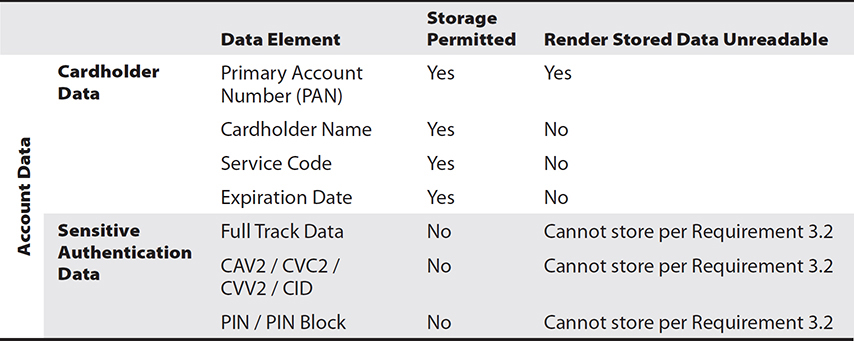
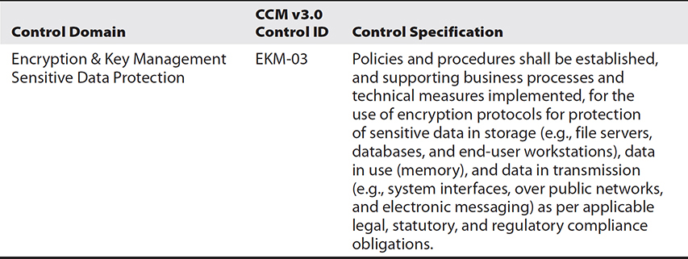

CHAPTER 32
Regulations, Standards, and Frameworks
In this chapter, you will
• Examine applicable regulations, standards, and legislation for security
• Explore key frameworks employed in security
• Learn about important security-related benchmarks and secure configuration guides
Developing the correct set of policies, procedures, and operations to achieve a desired level of organizational security is a complex set of tasks with many interdependencies. To assist organizations with developing and deploying these plans are numerous applicable regulations, standards, and frameworks that can impact organizational security posture. This chapter explores these information sources and examines how they can be employed.
Certification Objective This chapter covers CompTIA Security+ exam objective 5.2: Explain the importance of applicable regulations, standards, or frameworks that impact organizational security posture.
Regulations, Standards, and Legislation
Business operations never happen in a vacuum; there are at least some policies and procedures one must follow. But these policies and procedures get their direction from regulations, standards, and legislation. Laws are made by the legislative bodies of government to create a specified set of conditions and penalties. Government agencies develop and issue regulations to implement the laws. Standards are sets of consensus-built specifications for products, services, or systems. A wide range of different bodies create standards, and whether or not one wishes to follow them is a business decision. Laws and regulations must be followed; otherwise, the consequences specified within them can be invoked by the government.
General Data Protection Regulation (GDPR)
The General Data Protection Regulation (GDPR), which was a sweeping rewrite of European privacy regulations, went into effect in May of 2018. The GDPR ushers in a brand-new world with respect to data protection and privacy. With global trade being important to all countries, and the fact that trade rests upon information transfers, including those of personal data, the ability to transfer data, including personal data, between parties becomes important to trade. Enshrined in the Charter of Fundamental Rights of the European Union (EU) is the fundamental right to the protection of personal data, including when such data elements are transferred outside the EU. Recognizing that, the new set of regulations is more expansive and restrictive, making the Safe Harbor provisions obsolete. For all firms that wish to trade with the EU, there is now a set of privacy regulations that will require specific programs to address the requirements.
The GDPR brings many changes—one being the appointment of a Data Protection Officer (DPO). This role may be filled by an employee or a third-party service provider (for example, a consulting or law firm), and it must be a direct report to the highest management level. The DPO should operate with significant independence, and provisions in the GDPR restrict control over the DPO by management.
The GDPR specifies requirements regarding consent, and they are significantly more robust than previous regulations. Consent requirements are also delineated for specific circumstances:
• Informed/affirmative consent to data processing. Specifically, “a statement or a clear affirmative action” from the data subject must be “freely given, specific, informed and unambiguous.”
• Explicit consent to process special categories of data. Explicit consent is required for “special categories” of data, such as genetic data, biometric data, and data concerning sexual orientation.
• Explicit parental consent for children’s personal data.
• Consent must be specific to each data-processing operation, and the data subject can withdraw consent at any time.
The GDPR provides protections for new individual rights, and these may force firms to adopt new policies to address these requirements. The rights include the Right to Information, Right to Access, Right to Rectification, Right to Restrict Processing, Right to Object, Right to Erasure, and Right to Data Portability. Each of these rights is clearly defined with technical specifics in the GDPR. The GDPR also recognizes the risks of international data transfer to other parties and has added specific requirements that data protection issues be addressed by means of appropriate safeguards, including Binding Corporate Rules (BCRs), Model Contract Clauses (MCCs), also known as Standard Contractual Clauses (SCCs), and legally binding documents. These instruments must be enforceable between public authorities or bodies, as well as all who handle data.

EXAM TIP Remember that the General Data Protection Regulation (GDPR) specifies requirements for collecting personal information in the European Union (EU).
National, Territory, or State Laws
Laws are the system of rules, or statutes, made by the government of a country, state, or city. Statutes are enacted by a legislative body and then signed by the ranking official (president/governor). With respect to cybersecurity, there are a wide variety of laws from the national and state levels. With the advent of global network connections and the rise of the Internet as a method of connecting computers between homes, businesses, and governments across the globe, a new type of criminal trespass can now be committed. Computer trespass is the unauthorized entry into a computer system via any means, including remote network connections. These crimes have introduced a new area of law that has both national and international consequences. For crimes that are committed within a country’s borders, national laws apply. For cross-border crimes, international laws and international treaties are the norm. Computer-based trespass can occur even if countries do not share a physical border.
Computer trespass is treated as a crime in many countries. National laws against computer trespass exist in countries such as Canada, the United States, and the member states of the European Union (EU). These laws vary by country, but they all have similar provisions defining the unauthorized entry into and use of computer resources for criminal activities. Whether called computer mischief, as in Canada, or computer trespass, as in the United States, unauthorized entry and use of computer resources is treated as a crime with significant punishments. With the globalization of the computer network infrastructure, or Internet, issues that cross national boundaries have arisen and will continue to grow in prominence. Some of these issues are dealt with through the application of national laws upon request of another government. In the future, an international treaty may pave the way for closer cooperation.
There are laws that govern conduct such as hacking, making most actions that are unauthorized on networks a criminal act. The Electronic Communications Privacy Act (ECPA) of 1986 addresses a myriad of legal privacy issues that resulted from the increasing use of computers and other technology specific to telecommunications. Sections of this law address e-mail, cellular communications, workplace privacy, and a host of other issues related to communicating electronically. Section I was designed to modify federal wiretap statutes to include electronic communications. Section II, known as the Stored Communications Act (SCA), was designed to establish criminal sanctions for unauthorized access to stored electronic records and communications. Section III covers pen registers and tap and trace issues. Tap and trace information is related to who is communicating with whom, and when. Pen register data is the conversation information.
A major provision of ECPA was the prohibition against an employer’s monitoring an employee’s computer usage, including e-mail, unless consent is obtained (for example, clicking Yes on a warning banner is considered consent). Other legal provisions protect electronic communications from wiretap and outside eavesdropping, as users are assumed to have a reasonable expectation of privacy and afforded protection under the Fourth Amendment to the Constitution. It is of note that these constitutional protections only apply to searches and seizures by U.S. government agencies and law enforcement (federal, state, or local jurisdiction), but do not apply to private individuals or employers.
The Computer Fraud and Abuse Act (CFAA) of 1986—amended in 1994 and 1996, in 2001 by the USA PATRIOT Act, and in 2008 by the Identity Theft Enforcement and Restitution Act—serves as the current foundation for criminalizing unauthorized access to computer systems. CFAA makes it a crime to knowingly access a computer that is either considered a government computer or used in interstate commerce, or to use a computer in a crime that is interstate in nature, which in today’s Internet-connected age can be almost any machine. The act also makes it a crime to knowingly transmit a program, code, or command that results in damage. Trafficking in passwords or similar access information is also criminalized.
In the wake of several high-profile corporate accounting/financial scandals in the United States, the federal government in 2002 passed sweeping legislation, the Sarbanes-Oxley Act (SOX), overhauling the financial accounting standards for publicly traded firms in the United States. These changes were comprehensive, touching most aspects of business in one way or another. With respect to information security, one of the most prominent changes was the provision of Section 404 controls, which specify that all processes associated with the financial reporting of a firm must be controlled and audited on a regular basis. Since the majority of firms use computerized systems, this places internal auditors into the IT shops, verifying that the systems have adequate controls to ensure the integrity and accuracy of financial reporting. These controls have resulted in controversy over the cost of maintaining them versus the risk of not using them.
Section 404 requires firms to establish a control-based framework designed to detect or prevent fraud that would result in misstatement of financials. In simple terms, these controls should detect insider activity that would defraud the firm. This has significant impacts on the internal security controls, because a system administrator with root-level access could perform many if not all tasks associated with fraud and would have the ability to alter logs and cover their tracks. Likewise, certain levels of power users of financial accounting programs would also have significant capability to alter records.
There are a myriad of additional laws covering things such as privacy, digital signatures, medical records, and spam. Additional laws and regulations exist at the state level, and some of the most important are those coming from California. California, home to the U.S. tech industry, is also a progressive state when it comes to legislation. California led the way with respect to privacy laws and event security of Internet of Things (IoT) devices.
California Senate Bill 1386 (SB 1386) was a landmark law concerning information disclosures. It mandates that Californians be notified whenever PII is lost or disclosed. Since the passage of SB 1386, numerous other states have modeled legislation on this bill, and although national legislation has been blocked by political procedural moves, it will eventually be passed. The current list of U.S. states and territories that require disclosure notices is up to 49, with only Alabama, New Mexico, and South Dakota without bills. Each of these disclosure notice laws is different, making the case for a unifying federal statute compelling, but currently it is low on the priority lists of most politicians.
California extended its privacy laws with the California Consumer Privacy Act in 2020. This act requires organizations to obtain consent from individuals to collect and use their data. It also requires them to disclose how the data is used. It grants consumers the right to request that a business disclose the categories and specific pieces of information it collects, the sources of that information, the reasons why the business collects and/or sells that information, and the categories of the third parties that info is shared with. In many ways, this act mirrors the EU’s GDPR.
Payment Card Industry Data Security Standard (PCI DSS)
The payment card industry, including the powerhouses of MasterCard and Visa, through its PCI Security Standards Council, designed a private sector initiative to protect payment card information between banks and merchants. The Payment Card Industry Data Security Standard (PCI DSS) is a set of contractual rules governing how credit card data is to be protected (see the sidebar “PCI DSS Objectives and Requirements”). The current version is 3.2, which was released in April 2016. The next version, 4.0, was expected in late 2020, but has been delayed due to the worldwide COVID-19 pandemic. PCI DSS is a voluntary, private sector initiative that is proscriptive in its security guidance. Merchants and vendors can choose not to adopt these measures, but the standard has a steep price for noncompliance; the transaction fee for noncompliant vendors can be significantly higher, fines up to $500,000 can be levied, and in extreme cases the ability to process credit cards can be revoked.
PCI DSS has two defined types of information: cardholder data and sensitive authentication data. The protection requirements established for these elements are detailed in Table 32-1.

Table 32-1 PCI DSS Data Retention Guidelines
EXAM TIP The Payment Card Industry Data Security Standard (PCI DSS) protects customer credit card information and is designed to reduce fraud. The contractual standard has a steep financial penalty for noncompliance.
Key Frameworks
Frameworks provide a means of assessing the path through the maze of regulatory requirements and how they relate to risk management. One of the challenging aspects of cybersecurity operations is determining where one should concentrate efforts, how resources should be deployed, and what balance of emphasis to place between short-term and long-term items to optimize efforts on risk mitigation. Several types of key frameworks can be used as part of this analysis. In the following sections, we will look at frameworks from the Center for Internet Security, the National Institute of Standards and Technology, several ISO standards, SSAE standards, and the Cloud Security Alliance.
Center for Internet Security (CIS)
The Center for Internet Security (CIS) is a nonprofit organization that serves the cybersecurity community in a number of ways. It is the guardian of the CIS controls—a set of the top 20 security controls that should be implemented as a baseline of cybersecurity risk management. This set of controls, developed in a consensus manner over the past decade, provides a roadmap of which security controls should be implemented first, second, and so on. These prescriptive items represent the best practices across a wide range of entities, from government to industry, and are implementable by virtually any size entity.
The CIS has also published a set of CIS benchmarks (see www.cisecurity.org/cis-benchmarks/). These benchmarks are consensus-developed, secure configuration guidelines for hardening a wide range of technical items.
National Institute of Standards and Technology (NIST) Risk Management Framework (RMF)/Cybersecurity Framework (CSF)
The National Institute of Standards and Technology (NIST) provides recommended strategies to the U.S. government and others on how to handle a wide range of issues, including risk from cybersecurity issues. The approach taken by NIST is one built around the management of organizational risk through a risk management framework (RMF) associated with cybersecurity activities. The NIST RMF is composed of more than 10 publications, spanning virtually every activity associated with cybersecurity.
A second activity published by NIST is the Cybersecurity Framework (CSF). The CSF is designed to assist organizations in the early stages of planning their cybersecurity posture. It breaks down the types of activities into five different functions: identify, protect, detect, respond, and recover. The CSF was mandated by a congressional bill in 2014 that directed NIST to identify “a prioritized, flexible, repeatable, performance based, and cost-effective approach, including information security measures and controls that may be voluntarily adopted by owners and operators of critical infrastructure to help them identify, assess, and manage cyber risks.” The latest version of the CSF was published in March of 2020.
The third leg of NIST efforts in cybersecurity documentation is the National Initiative for Cybersecurity Education (NICE) Cybersecurity Workforce Framework. This is an effort to define the ecosystem of cybersecurity education, training, and workforce development needed to create the workforce needed in cybersecurity in government and in industry.
International Organization for Standardization (ISO) 27001/27002/27701/31000
ISO 27001 is the international standard defining an information security management system (ISMS). ISO 27001 is one of many related standards in the 27000 family. ISO 27002 is a document that defines security techniques and a code of practice for information security controls. ISO 27701 is a privacy extension to the 27000 series and adds the requirements to establish and maintain a privacy information management system. The ISO 31000 series is a set of guidelines, principles, framework, and process for managing risk. ISO 31000 addresses all forms of risk and management, not just cybersecurity risk.
SSAE SOC 2 Type I/II
Statement on Standards for Attestation Engagements (SSAE) is a set of auditing standards set by the American Institute of Certified Public Accountants (AICPA) Auditing Standards Board. SOC stands for Service Organization Controls. An SOC 2 report focuses on the internal controls at an organization related to compliance or operations, wrapped around the five trust principles (security, confidentiality, processing integrity, availability, and privacy). Depending on your organization and your business, some or all five of the trust principles would be in scope. The SOC 2 is a separate report that focuses on controls at a service provider relevant to security, availability, processing integrity, confidentiality, and privacy of a system. It ensures that your data is kept private and secure while in storage and in transit and that it is available for you to access at any time. The SOC 1 and SOC 2 reports come in two forms: Type I and Type II. Type I reports evaluate whether proper controls are in place at a specific point in time. Type II reports are done over a period of time to verify operational efficiency and effectiveness of the controls.
EXAM TIP SSAE SOC 2 reports focus on internal controls related to compliance or operations. A SOC Type I report evaluates whether proper controls are in place at a specific point in time. A SOC Type II report is done over a period of time to verify operational efficiency and effectiveness of the controls.
Cloud Security Alliance
Born in 2008 and incorporated in 2009, the Cloud Security Alliance issued the first comprehensive best-practice document for secure cloud computing, “Security Guidance for Critical Areas of Focus for Cloud Computing,” and has become the industry body for frameworks, benchmarks, and standards associated with cloud computing worldwide. Some of the key documents developed include the Cloud Controls Matrix (CCM), the user credential Certificate of Cloud Security Knowledge (CCSK), the Certified Cloud Security Professional (CCSP) credential (developed jointly with ISC2), and a security framework for government clouds.
Cloud Controls Matrix
The Cloud Controls Matrix (CCM) is a meta-framework of cloud-specific security controls, mapped to leading standards, best practices, and regulations. This document uses 16 domains to cover 133 security control objectives to address all key aspects of cloud security. The controls listed in this document are mapped to the main industry security standards, including ISO 2700X series, NIST SP 800-53, PCI DSS, ISACA COBIT, and many others.
An example of a CCM control is provided in Table 32-2.

Table 32-2 A Sample Control from CCM v3.0
Reference Architecture
The Cloud Security Alliance has an Enterprise Architecture Working Group (EAWG) that has developed the Enterprise Architecture for cloud deployments and services. This framework serves as both a methodology and a set of tools that can be utilized by security architects, enterprise architects, and risk management professionals. The objective of the framework is to develop and leverage a common set of solutions that enable the assessment of where internal IT operations and their cloud providers are in terms of security capabilities. The framework can also be used to plan a roadmap to meet the cloud security needs of the enterprise.
EXAM TIP Be prepared to identify Cloud Security Alliance items by their acronyms and understand the difference between them. The Enterprise Architecture (EA) is a broad framework describing all aspects, while the Cloud Controls Matrix (CCM) is a list of security controls for the cloud.
Benchmarks and Secure Configuration Guides
Benchmarks and secure configuration guides offer guidance for setting up and operating computer systems to a secure level that is understood and documented. As each organization may differ, the standard for a benchmark is a consensus-based set of knowledge designed to deliver a reasonable set of security across as wide a base as possible. There are numerous sources for these guides, but three main sources exist for a large number of these systems. You can get benchmark guides from manufacturers of the software, from the government, and from an independent organization such as the Center for Internet Security (CIS) and the Cloud Security Alliance (CSA). Not all systems have benchmarks, nor do all sources cover all systems, but searching for and following the correct configuration and setup directives can go a long way in establishing security.
EXAM TIP Organizations often refer to Center for Internet Security (CIS) benchmarks to develop secure configuration postures.
The vendor/manufacturer guidance source is easy—go to the website of the vendor of your product. The government sources are a bit more scattered, but two solid sources are the NIST Computer Security Resource Center’s National Vulnerability Database (NVD) and the National Checklist Program (NCP) Repository (https://nvd.nist.gov/ncp/repository). A different source is the U.S. Department of Defense’s Defense Information Security Agency (DISA) Security Technical Implementation Guides (STIGs). These are detailed step-by-step implementation guides, a list of which is available at https://public.cyber.mil/stigs/.
Platform/Vendor-Specific Guides
Setting up secure services is important to enterprises, and some of the best guidance comes from the manufacturer in the form of platform/vendor-specific guides. These guides include installation and configuration guidance, and in some cases operational guidance as well.
Web Server
Many different web servers are used in enterprises, but the market leaders are Microsoft, Apache, and Nginx. By definition, web servers offer a connection between users (clients) and web pages (data being provided), and as such they are prone to attacks. Setting up any external-facing application properly is key to preventing unnecessary risk. Fortunately, for web servers, several authoritative and proscriptive sources of information are available to help administrators properly secure the application. In the case of Microsoft’s IIS and SharePoint Server, the company provides solid guidance on the proper configuration of the servers. The Apache Software Foundation provides some information for its web server products as well.
Another good source of information is from the Center for Internet Security, as part of its benchmarking guides. The CIS guides provide authoritative, proscriptive guidance developed as part of a consensus effort among consultants, professionals, and others. This guidance has been subject to significant peer review and has withstood the test of time. CIS guides are available for multiple versions of Apache, Microsoft, and other vendors’ products.
OS
The operating system (OS) is the interface for the applications that we use to perform tasks and the actual physical computer hardware. As such, the OS is a key component for the secure operation of a system. Comprehensive, proscriptive configuration guides for all major operating systems are available from their respective manufacturers, from the Center for Internet Security and from the DoD DISA STIGs program.
Application Server
Application servers are the part of the enterprise that handles specific tasks we associate with IT systems. Whether it is an e-mail server, a database server, a messaging platform, or any other server, an application server is where the work happens. Proper configuration of an application server depends to a great degree on the server specifics. Standard application servers, such as e-mail and database servers, have guidance from the manufacturer, CIS, and STIGs. The less standard servers—ones with significant customizations, such as a custom set of applications written in-house for your inventory control operations, or order processing, or any other custom middleware—also require proper configuration, but the true vendor in these cases is the in-house builders of the software. Ensuring proper security settings and testing of these servers should be part of the build program so that they can be integrated into the normal security audit process to ensure continued proper configuration.
Network Infrastructure Devices
Network infrastructure devices are the switches, routers, concentrators, firewalls, and other specialty devices that make the network function smoothly. Properly configuring these devices can be challenging but is very important because failures at this level can adversely affect the security of traffic being processed by them. The criticality of these devices makes them targets because, if a firewall fails, in many cases there are no indications until an investigation finds that it failed to do its job. Ensuring these devices are properly configured and maintained is not a job to gloss over, but one that requires professional attention by properly trained personnel and backed by routine configuration audits to ensure they stay properly configured. With respect to most of these devices, the greatest risk lies in the user configuration of the device via rulesets, and these are specific to each user and cannot be mandated by a manufacturer’s installation guide. Proper configuration and verification are site specific and, many times, individual device specific. Without a solid set of policies and procedures to ensure this work is properly performed, these devices, while they may work, will not perform in a secure manner.
Chapter Review
In this chapter, you first became acquainted with the applicable regulations, standards, and frameworks that can impact organizational security posture. The chapter opened with an examination of regulations, standards, and legislation. Under this category, the EU’s General Data Protection Regulation (GDPR) was covered as well as several national, state, and territorial laws. The first section concluded with the Payment Card Industry Data Security Standard (PCI DSS).
The next major section covered key frameworks that are employed in the enterprise. The frameworks discussed were from the Center for Internet Security (CIS), the National Institute of Standards and Technology Risk Management Framework (RMF)/Cybersecurity Framework (CSF), the International Organization for Standardization (ISO 27001/27002/27701/31000), SSAE SOC Type I/II, and the Cloud Security Alliance (cloud controls matrix and reference architecture).
The chapter wrapped up with an examination of the different types of benchmarks and secure configuration guides. In this section, platform- and vendor-specific guides were presented, including those for web servers, operating systems, application servers, and network infrastructure devices.
Questions
To help you prepare further for the CompTIA Security+ exam, and to test your level of preparedness, answer the following questions and then check your answers against the correct answers at the end of the chapter.
1. Industry-standard frameworks are primarily useful for which of the following purposes?
A. Aligning with an audit-based standard
B. Aligning IT and security with the enterprise’s business strategy
C. Providing high-level organization over processes
D. Creating diagrams to document system architectures
2. Which of the following terms is a privacy regulation?
A. CFAA
B. SOX
C. GDPR
D. PCI DSS
3. Which of the following are security control lists that can be employed in an enterprise? (Choose all that apply.)
A. ISO 27001
B. CSA CCM
C. CIS top 20 list
D. NIST RMF
4. Which reports are done over a period of time to verify operational efficiency and effectiveness of controls?
A. SOC Type I
B. PCI DSS audit report
C. CSA CCM
D. SOC Type II
5. Which of the following is not a PCI DSS control objective?
A. Build and maintain a secure network
B. Maintain a vulnerability management program
C. Establish a CSO position
D. Implement strong access control measures
6. Which ISO standard covers risk management activities?
A. ISO 27001
B. ISO 27701
C. ISO 27002
D. ISO 31000
7. Guidance for setting up and operating computer systems to a secure level that is understood and documented can be obtained from which of the following? (Choose all that apply.)
A. ISO
B. CIS
C. Government sources
D. Vendors/manufacturers
8. Which of the following are not U.S. laws associated with cybersecurity? (Choose all that apply.)
A. CFAA
B. PCI DSS
C. GDPR
D. Sarbanes Oxley (SOX)
9. Where would one look for consensus-developed, secure configuration guidelines for hardening a wide range of technical items?
A. CIS
B. ISO
C. Vendors/manufacturers
D. Peers
10. Comprehensive, proscriptive configuration guides for all major operating systems are available from which of the following? (Choose all that apply.)
A. Vendors/manufacturers
B. NIST
C. CIS
D. ISO
Answers
1. B. Industry-standard frameworks provide a method to align IT and security with the enterprise’s business strategy.
2. C. GDPR is the EU privacy directive with far-reaching consequences across industries and even country boundaries.
3. B and C. The Cloud Security Alliance Cloud Controls Matrix is a list of security controls associated with cloud deployments. The CIS top 20 list is an ordered set of security controls for the enterprise. Both ISO 27001 and NIST RMF are procedural documents, not listings of controls.
4. D. SOC Type II reports are done over a period of time to verify operational efficiency and effectiveness of controls. SOC Type I reports, on the other hand, evaluate whether proper controls are in place at a specific point in time.
5. C. PCI DSS control objectives include:
1. Build and maintain a secure network
2. Protect cardholder data
3. Maintain a vulnerability management program
4. Implement strong access control measures
5. Regularly monitor and test networks
6. Maintain an information security policy
Nowhere does it mandate specific corporate positions.
6. D. ISO 31000 covers risk management processes and procedures.
7. B, C, and D. Benchmarks and secure configuration guides offer guidance for setting up and operating computer systems to a secure level that is understood and documented. There are numerous sources for these guides, but three main sources exist for a large number of these systems. You can get benchmark guides from manufacturers of the software, from the government, and from an independent organization such as the Center for Internet Security (CIS) or the Cloud Security Alliance (CSA). ISO is a standards organization and does not deal with specific implementation details.
8. B and C. PCI DSS is a voluntary, contractual-based standard, and GDPR is an EU directive, not a U.S. law.
9. A. The key word is consensus. CIS has developed a consensus-based set of secure configuration guidelines for hardening a wide range of technical items.
10. A and C. Vendors/manufacturers and the Center for Internet Security both offer comprehensive configuration guides for operating systems. Another source is the Department of Defense STIG program. NIST and ISO develop guidance for policies and processes, but not specific configurations for operating systems.